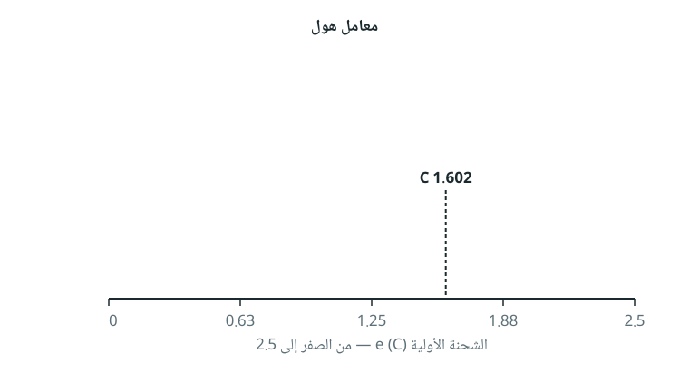

معامل هول
Hall coefficient
معامل هول R_H يحدد جهد هول الناتج عن مرور تيار في موصل موضوع في مجال مغناطيسي: V_H = R_H·I·B/t. إشارته تكشف نوع حاملات الشحنة، ومقداره يكشف كثافتها: R_H = 1/(n·q).
حين يمر تيار في صفيحة موصلة عمودياً على مجال مغناطيسي، تنحرف حاملات الشحنة بقوة لورنتز إلى أحد جانبي الصفيحة، فينشأ فرق جهد عرضي هو جهد هول. واتجاه هذا الجهد يعتمد على إشارة الحاملات: الإلكترونات السالبة تنحرف إلى جهة، والثقوب الموجبة إلى الجهة المقابلة. مثال: صفيحة نحاس سمكها 0.100 mm وكثافة إلكتروناتها 8.47×10²⁸ m⁻³، يمر فيها تيار 2.00 A في مجال 0.500 T: R_H = 1/(8.47×10²⁸×1.602×10⁻¹⁹) = 7.37×10⁻¹¹ m³/C، وV_H = 7.37×10⁻¹¹×2.00×0.500/1.00×10⁻⁴ = 7.37×10⁻⁷ V.
كيف تعمل الظاهرة؟
حاملات الشحنة المتحركة في الموصل تتأثر بقوة لورنتز F = q·v×B التي تدفعها عمودياً على سرعتها وعلى المجال. فتتراكم على أحد جانبي الصفيحة حتى ينشأ مجال كهربائي عرضي يعادل قوة لورنتز، وعندها يتوقف التراكم ويصبح الجهد العرضي ثابتاً. واتجاه التراكم يعتمد على إشارة q، ولهذا يكشف قياس إشارة جهد هول نوع الحاملات الأغلب في المادة.
العلاقة بالأرقام
V_H = R_H·I·B/t، وR_H = 1/(n·q). مثال: فيلم نحاس بسماكة 0.100 mm وتيار 2.00 A ومجال 0.500 T يعطي 0.737 μV. وللمقارنة، شبه موصل بكثافة 10²² m⁻³ يعطي جهداً أكبر بـ10⁶ مرة عند الشروط نفسها، ولهذا تُصنع حساسات هول من أشباه الموصلات لا من المعادن.
مفاهيم متقاربة
يُفرَّق بين معامل هول ومعامل المقاومية: الأول يصف الجهد العرضي والثاني مقاومة التيار. ويُفرَّق بين تأثير هول في المعادن وتأثير هول الشاذ في المواد المغناطيسية، حيث يتناسب الثاني مع المغناطيسية لا مع المجال. ويُفرَّق بين جهد هول وجهد نرنست: الأول عرضي في مجال مغناطيسي والثاني طولي في تدرج حراري. وأخيراً يُفرَّق بين معامل هول المقيس ومعامل هول النظري، حيث يختلفان في المعادن متعددة النطاقات.
حدود التطبيق
معامل هول البسيط يفترض حاملات شحنة واحدة فقط، ولا يصلح في المعادن ذات النطاقات المتعددة كالحديد والنيكل. ولا يصف أشباه الموصلات المختلطة حيث توجد إلكترونات وثقوب معاً، فيلزم نموذج ثنائي الحاملات. ولا يُستعمل في قياس كثافة الحاملات في المواد العازلة. وأخيراً لا يصف تأثير هول في الأنظمة الكمومية القوية المجال، حيث يصبح التأثير كمومياً (تأثير هول الكمي).

| الكمية | القيمة | المصدر |
|---|---|---|
| الشحنة الأولية e | 1.602 176 634×10⁻¹⁹ C | [1] |
| معامل هول للنحاس | 7.37×10⁻¹¹ m³·C⁻¹ | [1] |
| جهد هول في المثال | 7.37×10⁻⁷ V | [1] |
المصادر
- 1 CODATA Value: elementary charge — NIST — CODATA 2022 recommended values (2024). physics.nist.gov/cgi-bin/cuu/Value?e · اطُّلع عليه 2026-11-22
- 2 CODATA Value: vacuum magnetic permeability — NIST — CODATA 2022 recommended values (2024). physics.nist.gov/cgi-bin/cuu/Value?mu0 · اطُّلع عليه 2026-11-22
استشهد بهذا المصطلح
الصيغتان مبنيتان من بيانات الصفحة نفسها: العنوان والتاريخ ورابط النسخة المنشورة.
معامل هول — Hall coefficient. (2026). ديوان المعرفة — انفراد. https://infiradev.com/diwan/terms/term-hall-coefficient.html
@misc{term-hall-coefficient2026,
title = {معامل هول},
titleaddon = {Hall coefficient},
howpublished = {{ديوان المعرفة — انفراد} — مرجع علمي عربي},
year = {2026},
url = {https://infiradev.com/diwan/terms/term-hall-coefficient.html},
urldate = {2026-11-26},
note = {مراجعة علمية: hermes (مراجعة معتمدة 2026-11-26)}
}
راجعه: hermes (مراجعة معتمدة 2026-11-26) · 2026-11-26 · آخر تحديث 2026-11-22